Three-directory minimum, one agent call, slash commands, and a plan→implement composition.
The Agentic Layer
Your codebase has an application at its center and a second engineering system wrapped around it. The final TAC lesson is about spending your time on the ring that makes the center increasingly operable by agents.
Mastery promise. By the end, you will be able to draw the two layers, build the three-directory minimum, trace an agent call through its output receipts, explain the prompt-to-plan contract inside a composed ADW, operate task- and Notion-triggered agent factories, defend the one-agent exception, and use one daily question to decide where your next engineering hour belongs.
Application layerapp · data · database · infra · DevOps
PromptsReusable instructions and template meta prompts
ADWsDeterministic code that calls agents
PlansStructured work passed between purposes
TriggersCron · board · webhook · product
The app is a good place to start—and a terrible place to stay
The trap at the end of this course is subtle: you can understand every tactic and still spend every week inside application code. TAC-8 turns the entire course into a time-allocation decision. The system around the app is now a first-class product of engineering.
Picture a familiar workday. You open a feature file, repair a query, add a route, tune a component, and manually run the checks. Every action may be correct. The deadline may even justify it. But when the next similar task arrives, the same human sequence must happen again. The application improved once; the mechanism that improves the application did not.
The lesson offers a different unit of progress. A reusable prompt captures how you reason about a class of work. A plan format captures what adequate preparation must contain. An AI Developer Workflow calls a planner, extracts its artifact, calls an implementer, and preserves the outputs. A trigger removes the need for you to dispatch the run. A worktree isolates the run. Feedback loops decide whether the run is trustworthy. Each addition thickens a ring around the application. The ring is not documentation about the app. It is an executable operating layer for the app.
TAC-8 makes the idea concrete through five sibling codebases. The application layer changes from hello-world scripts to a sentiment notebook, a task board, a prototype factory, and a Natural Language SQL product. The interesting invariant is the agentic layer wrapped around each one. As the examples scale, the same primitives reappear with more state, isolation, routing, review, and observability.
A Markdown task board, worktree groups, dependencies, workflow tags, and concurrent agents.
Present in the repository but intentionally skipped in the lesson and this lab.
Notion as prompt input, specialized planners, isolated environments, and HIL review.
Agents inside the application, with SQLite-backed session continuity and parallel chat windows.
What you are training
- AllocationClassify a work block as application-layer or agentic-layer work and defend the choice using the lesson’s three exemptions.
- ConstructionIdentify the smallest viable ring—
adws/,.claude/commands/, andspecs/—without cargo-culting the scaled tree. - CompositionTrace state and artifacts through a deterministic wrapper around a non-deterministic agent call.
- OrchestrationRead task states, dependencies, model and workflow routing, claim semantics, and isolated environments.
- JudgmentKnow when review can be removed, when conversational continuity justifies a focused-agent exception, and when an app-layer deadline is legitimate.
Frame provenance. The lesson’s screen capture freezes at about 34:30 while the audio continues. This chapter uses all twelve live full-resolution frames before the defect. The later AEA, PITER→PITE, definition, and final-question beats are rendered as labeled HTML diagrams—not reconstructed screenshots.
Tactic #8 is a calendar decision
“Prioritize agentics” sounds philosophical until you turn it into a ratio. The starting prescription is concrete: at least half of engineering time belongs to the agentic layer, and the share may be higher while the layer is thin.
1 · Hook — concrete failure
The engineer who agrees and never reallocates
An engineer watches seven tactics, appreciates all of them, and returns Monday to the feature queue. Every deadline is treated as an exception. Every repeated manual task is “too small” to template. At week’s end, one more feature exists, but the same human must plan, dispatch, inspect, and repair the next one. The engineer adopted a belief and preserved the old operating model.
Tactic #8 is meant to be falsifiable. Look at the week. If application work occupies every block, the tactic was not practiced. The claim is not that application work has no value. The claim is that it feels productive enough to trap you there while others build systems that compound.
2 · Picture — the allocation
Two layers, one scarce resource
Agentic layer · ≥50%
- Template problem classes
- Build and compose ADWs
- Add triggers and isolation
- Encode validations
- Improve reports and observability
Application layer · ≤50% starting point
- Product code and data
- Database and infrastructure
- DevOps and runtime concerns
- Manual tests when necessary
- Deadline work when genuinely necessary
The ratio is a heuristic from the lesson, not a capacity-planning formula. Its purpose is to prevent the application layer from silently absorbing all available time. During bootstrapping, the ring may deserve more than half because every reusable primitive changes the cost of later work.
3 · Story — the five demonstrations
The repository spends its attention where the tactic points
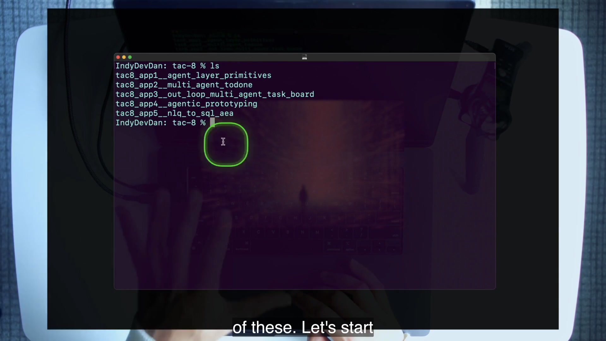
Dan starts with a deliberately small application, then increases only the sophistication of the surrounding system. app1 proves the three-directory minimum. app2 adds concurrent task pickup and worktree isolation. app4 moves prompt input to Notion and routes by prototype class. app5 places resumable agents inside the product. The progression is a practical argument: if you keep improving only the center, you miss the system that can operate many centers.
4 · Name it
Prioritize Agentics
Plain English: when a recurring engineering action can become a prompt, contract, workflow, trigger, isolated environment, or feedback loop, invest in that reusable mechanism. The aim is not automation theater. The aim is to convert your judgment into an asset that can be called repeatedly.
5 · Worked example — classify a week
From “build the endpoint” to “close the problem class”
Suppose the week contains five similar implementation chores. The application-layer plan handles each one manually: inspect the repo, draft the change, run checks, and write a report five times. The agentic-layer plan spends an early block improving chore.md so its Plan Format includes the team’s relevant-files rules, ordered tasks, and validation commands; then it runs the composed planner→builder workflow for each chore and inspects the receipts.
The second plan may feel slower on task one. It produces a reusable prompt contract, an executable composition, and evidence for all five. That is the lesson’s parabolic-return claim: a small improvement in the ring can return many times its cost across work that follows. The important output of the week is not only five changes; it is a stronger method for the sixth.
6 · You try — ten-minute allocation audit
Make the ratio visible before changing it
- List the last ten engineering work blocks you remember.
- Mark each A for application layer or G for agentic layer.
- For every A block, note whether it met one of the lesson’s three exemptions: deadline, manual testing, or in-loop prompt verification.
- Circle the most repeated non-exempt application action.
- Name one ring artifact that could absorb it: prompt, plan format, ADW, trigger, worktree rule, output contract, or validation.
Do not optimize the percentage yet. First make the hidden allocation observable.
7 · Common fail + fix
Failure: using urgency as a permanent exemption
Symptom: every task is deadline work, so no week contains agentic-layer investment. The shortcut becomes the system.
Fix: accept a genuine deadline block, then schedule a ring-repair block against the repeated manual action it exposed. The tactic does not deny urgent application work; it prevents urgency from erasing the compounding layer indefinitely.
8 · Current practice
The packaging evolves; the allocation question survives
9 · Retrieval
What is Tactic #8, and what starting time allocation does it prescribe?
Reveal answer
Prioritize Agentics: prioritize the agentic layer and spend at least half of engineering time on it as a starting point, potentially more while bootstrapping.
Why is agreeing with the tactic insufficient?
Reveal answer
It is a behavioral allocation. If the calendar still contains only application work, the agentic layer does not improve or compound.
What does Dan say this tactic compresses?
Reveal answer
The other tactics across the course, from stopping hand-coding through targeting zero-touch engineering.
10 · Teach-back
Explain the ≥50% rule to a teammate facing a real deadline. Defend both the legitimate exemption and the follow-up investment that prevents deadline work from becoming permanent manual work.
Pass if you speak about time allocation, repeated problem classes, and future compounding—not merely “AI makes us faster.”
Draw the boundary before you automate across it
The application layer is everything classical. The agentic layer is the operating ring: deterministic workflow code plus non-deterministic prompts and agents, organized so it can act on the application without becoming indistinguishable from it.
1 · Hook — concrete failure
The “automation” folder hidden inside the product
A team places agent scripts beside application routes because the scripts edit those routes. Prompts are copied into issue comments. Generated plans live in chat history. Runs write logs wherever the current process happens to be. When two agents collide, the team blames non-determinism. When a prompt changes, nobody knows which workflow depended on its report. The layer exists in behavior but not in architecture.
The separation is not for a tidy file tree. It makes ownership and reuse legible. Product code serves users. Agentic-layer code serves the system that changes product code. Keeping those responsibilities distinct lets the same operating concepts wrap a Python script, notebook, Vue client, database-backed app, or later codebase.
2 · Picture — the ring
Old-world guarantees meet new-world judgment
Deterministic codeIDs · paths · retries · subprocesses · parsers · state
+
Agentic promptsResearch · plan · build · interpret · report
=
The agentic layerAn executable ring that operates the application layer
This is the lesson’s two-ingredient definition, rendered as a diagram because the video is audio-only by the time the definition lands. The deterministic half does not make model output deterministic. It makes invocation, state, boundaries, and receipts explicit around model work.
3 · Story — thin ring to thick ring
Each app adds one kind of operating power
At the beginning, the ring is three directories: instructions, plans, and executable workflows. app1 adds the gateway and a two-phase composition. app2 adds task state, triggers, routing, and dedicated environments. app4 moves the input and review surfaces outside the coding tool. app5 moves the agent interface inside the application and engineers session continuity. The ring thickens through useful capabilities, not decorative hierarchy.
The application layer remains deliberately broad in the lesson: raw app, database, infrastructure, and DevOps all belong there. That broadness is useful. It keeps the diagnostic simple. When you sit down, are you improving the thing users consume, or improving the system that agents use to operate that thing?
4 · Name it
Agentic layer and application layer
Do not reduce the agentic layer to “the AI files.” A prompt without a place in a workflow may be useful, but the lesson’s ring includes contracts, scripts, triggers, state, isolation, reports, and checks. Likewise, deterministic code in adws/ is not ordinary utility code merely because Python executes predictably. Its responsibility is to compose and control agentic work.
5 · Worked example — classify app1
The split is visible in the repository
Agentic ring
.claude/commands/prime.mdchore.md,feature.md,implement.mdspecs/chore-*.mdadws/adw_prompt.pyadw_chore_implement.pyagents/<adw_id>/...receipts
Application center
apps/main.pyapps/main.ts- the generated
apps/main.shafter the lab run
The generated shell file is application-layer output even though an agent writes it. Layer classification follows responsibility, not authorship. The planner prompt and workflow remain in the ring; the artifact they produce belongs to the app.
6 · You try — boundary test
Classify by responsibility, not extension
Without revealing the answer, classify each item: tasks.md, tweets_v1.csv, .mcp.json, adw_trigger_cron_todone.py, app/server/main.py, a generated plan, and cc_final_object.json. For each, complete the sentence: “This belongs to the ___ layer because its responsibility is ___.”
Check: task state, triggers, plans, and agent receipts belong to the operating ring; product data and product server code belong to the application. MCP configuration in app4 supports the prototype workflow and is treated as part of that lesson’s agentic operating setup.
7 · Common fail + fix
Failure: separating folders but not contracts
Symptom: prompts and scripts live outside apps/, but prompts return free-form text that deterministic code guesses at. The physical boundary looks clean while the behavioral seam is brittle.
Fix: pair directory separation with explicit input and report contracts, stable artifact paths, failure exits, and validation. The ring must be operable, not merely visible.
8 · Current practice
Keep the conceptual seam even when platforms hide the glue
9 · Retrieval
What are the two ingredients in the agentic-layer definition?
Reveal answer
Traditional deterministic workflow code, stored in ADWs, combined with non-deterministic agentic prompts and model behavior.
What belongs under the application layer?
Reveal answer
The raw application and classical software concerns such as data, database, infrastructure, and DevOps.
Why does a generated application file remain application-layer?
Reveal answer
Layer membership follows responsibility, not whether a human or agent authored it. The file serves the product; the workflow that produced it serves the operating ring.
10 · Teach-back
Draw a core and ring from memory. Put six real repository artifacts in the correct place, then explain why the boundary improves reuse, safety, and diagnosis.
Pass if you include both ingredients of the ring and avoid defining it as “whatever the AI wrote.”
Start with three directories, not a platform
The Minimum Viable Agentic Layer is intentionally small: prompts, plans, and workflows. Its one rule is compositional rather than technological—use code that can reference files and remain isolated from the application layer.
1 · Hook — concrete failure
The scaled tree that never runs
A team sees the production-shaped tree in app1’s README and begins with hooks, trigger daemons, agent databases, worktree managers, type packages, and dashboards. Weeks later the layer can describe itself beautifully but still cannot take one prompt, create one plan, and hand that plan to an implementer. Complexity arrived before a valuable path.
The opposite failure is a pile of chat prompts with no reusable location, artifact contract, or executable caller. The MVAL sits between them. It is enough structure to make the ring real and little enough structure to understand end to end.
2 · Picture — the three pieces
Atoms, handoff artifacts, and composition
.claude/commands/PromptsReusable instructions such as /prime, /chore, /feature, and /implement. They encode purpose and report contracts.
specs/PlansStructured artifacts emitted by planning prompts and consumed by higher-order implementation prompts.
adws/WorkflowsExecutable code that creates IDs, calls agents, passes artifacts, handles failure, and preserves receipts.
3 · Story — read before run
The README makes the invisible boundary explicit
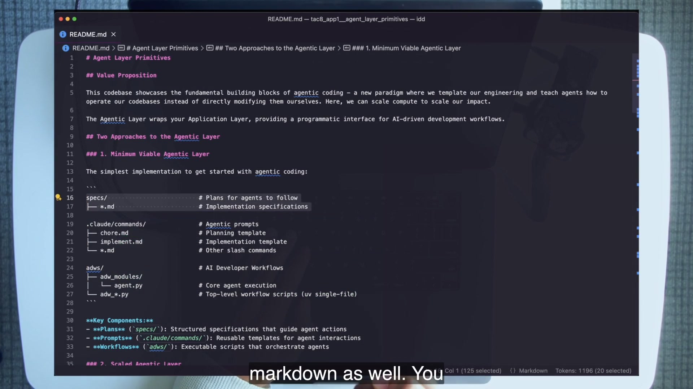
specs/ for plans, .claude/commands/ for prompts, and adws/ for executable workflows.Dan immediately grounds the tree in an in-loop baseline. The agent runs /prime, lists tracked files, reads the repository documentation, and reports what it learned. Then /start runs the tiny applications. The sequence matters: reusable prompts are not abstract assets; they are executable instructions tested interactively before being called outside a chat.
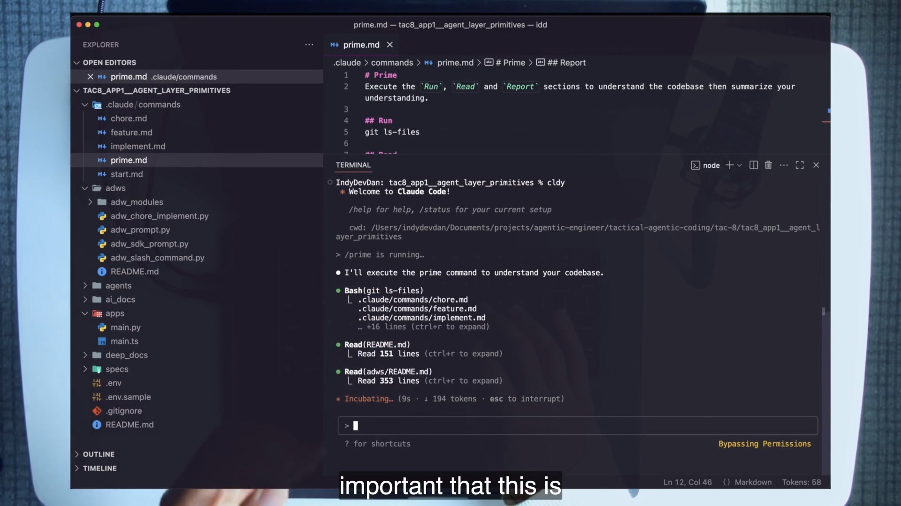
/prime is the in-loop baseline: inspect files, read both READMEs, and establish repository context before the chapter introduces headless invocation.4 · Name it
Minimum Viable Agentic Layer
The course uses executable UV Python scripts, but explicitly allows Bun TypeScript or shell. Language loyalty is not the lesson. The durable shape is an instruction library, a handoff-artifact library, and a deterministic composition surface.
5 · Worked example — map app1
Five prompts, four top-level workflows, two tiny apps
tac8_app1__agent_layer_primitives/
├── .claude/commands/
│ ├── prime.md # establish codebase context
│ ├── start.md # run the application
│ ├── chore.md # generate a chore plan
│ ├── feature.md # generate a feature plan
│ └── implement.md # consume a plan
├── specs/ # generated and committed plans
├── adws/
│ ├── adw_prompt.py
│ ├── adw_slash_command.py
│ ├── adw_chore_implement.py
│ └── adw_sdk_prompt.py
└── apps/
├── main.py
└── main.tsThe exact inventory comes from the course codebase. It is deliberately inspectable. You can read the prompt that creates a plan, the regex that extracts its path, the higher-order prompt that consumes it, and the output tree produced by each call. That legibility is a feature for both humans and later agents.
6 · You try — three-directory trace
Follow one task without running it
- Open app1’s
.claude/commands/chore.md. - Find its variables, instructions, Plan Format, and Report section.
- Open
adws/adw_chore_implement.pyand find where/choreis invoked. - Find
extract_plan_path(). - Find where the extracted path becomes the argument to
/implement.
Pass when you can point to all three MVAL directories during one workflow trace.
7 · Common fail + fix
Failure: copying the destination instead of building the path
Symptom: you reproduce the scaled tree from the README, including hooks, databases, trigger families, tests, and worktrees, before one prompt→plan→implementation path earns its keep.
Fix: begin with one repeated problem class and the MVAL. Add a component only when a real failure demands it: receipts for diagnosis, a parser for a contract, a trigger for dispatch, a worktree for collision, or a hook for policy.
8 · Current practice
Commands can become Skills; the three roles remain
9 · Retrieval
Name the MVAL’s three pieces and their jobs.
Reveal answer
.claude/commands/ stores prompts, specs/ stores plans, and adws/ stores executable workflows that compose agents and artifacts.
What is the scripting-language rule?
Reveal answer
Use any language that can compose code, reference files, and keep the agentic layer isolated from the application layer.
Why test /prime and /start in-loop first?
Reveal answer
Interactive use validates the reusable instruction and its assumptions before a headless workflow calls it without a conversational safety net.
10 · Teach-back
Teach the MVAL to someone proposing an agent platform. Explain what each directory contributes, what the one language rule protects, and the evidence that should justify adding the next directory.
Pass if your explanation starts with a working path rather than a scaled architecture chart.
A script becomes a gateway when it calls an intelligence
adw_prompt.py is the smallest real ADW in the course: one prompt enters, one agent runs, and a managed tree of IDs, retries, streams, final output, and custom summary remains behind.
1 · Hook — concrete failure
The wrapper everyone skips is where control begins
A developer sees a Python script that shells out to claude -p and calls it boilerplate. They run the task, read the last line in the terminal, and move on. When the agent later stalls, returns malformed output, or produces an unexpected result, there is no shared answer to basic questions: Which prompt ran? Which model? In which directory? Was it retried? Where is the complete message stream? Which output should a downstream step consume?
The agent call is non-deterministic. That makes the surrounding deterministic control more important, not less. The wrapper gives every run an identity and turns an ephemeral terminal event into inspectable artifacts.
2 · Picture — four receipts
Stream → array → final object → summary
cc_raw_output.jsonlLive streamOne JSON event per line as the headless Claude process emits it.
cc_raw_output.jsonParsed arrayThe stream converted into a JSON array for easier programmatic inspection.
cc_final_object.jsonFinal eventThe last object from the parsed run, preserved as the final model-side result object.
custom_summary_output.jsonWorkflow viewThe course script’s own concise metadata and result summary for this invocation.
These files serve different consumers. The stream is a forensic timeline. The array is easier to traverse. The final object gives a downstream system one terminal result. The custom summary presents the workflow’s interpretation and metadata. Collapsing them into “the log” erases useful distinctions.
3 · Story — Dan’s exact run
A prompt enters through a visible control panel
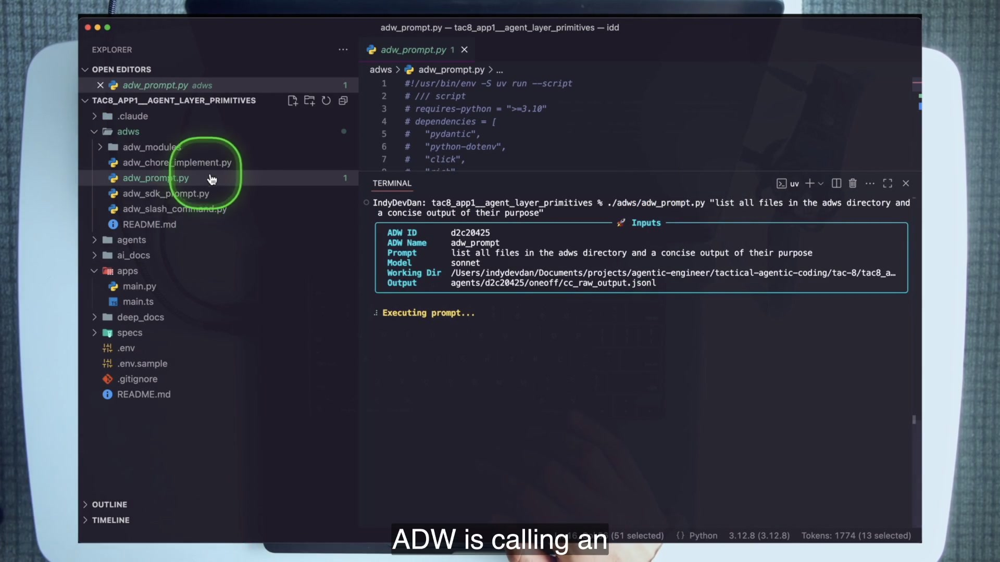
The course run asks for a concise inventory of the adws directory. The script generates a short ADW ID, names the agent oneoff, chooses the model, resolves the working directory, creates the output path, and calls the shared agent module. The module builds a Claude CLI command using print mode and stream JSON, filters the subprocess environment, and owns retry behavior. The “intelligence” still decides how to inspect and summarize; the script owns how the work is invoked and recorded.
4 · Name it
The gateway into agentic coding
The gateway does not have to be a subprocess forever. app1 also includes agent_sdk.py and adw_sdk_prompt.py, pointing toward the supported SDK form. The transferable design is an agent as a callable component with typed or structured inputs, explicit identity, controlled environment, retry policy, and durable output.
5 · Worked example — read the invocation contract
What deterministic control does—and does not—guarantee
./adws/adw_prompt.py \
"list all files in the adws directory and a concise output of their purpose"
# outputs
agents/<adw_id>/oneoff/
├── cc_raw_output.jsonl
├── cc_raw_output.json
├── cc_final_object.json
└── custom_summary_output.jsonThe wrapper can guarantee the naming scheme, destination, CLI flags, retry count, and conversion steps. It cannot guarantee that the agent’s reasoning is correct. That is why later layers add prompt contracts, validations, review states, and feedback loops. Deterministic control creates a surface on which non-deterministic quality can be measured and improved.
The course command includes --dangerously-skip-permissions. Treat that as period-specific demo configuration, not part of the gateway definition. Identity, observability, and explicit invocation transfer. A blanket permission bypass does not.
6 · You try — output tour
Explain four files in four sentences
- Run the exact app1 gateway command inside the course clone.
- Copy the displayed ADW ID.
- Open the four files under
agents/<id>/oneoff/in stream-to-summary order. - Write one sentence for what each contains and one sentence naming the downstream consumer that would prefer it.
- Find the model, prompt, working directory, success state, and any session or usage data available in the outputs.
Pass only if you can distinguish the final object from the custom summary without reading their filenames.
7 · Common fail + fix
Failure: treating “success” as evidence of correctness
Symptom: the subprocess exits successfully and the workflow declares the task trustworthy. Or a downstream step scrapes a human-formatted terminal panel instead of consuming a stable artifact.
Fix: separate transport success from task quality. Preserve machine-readable outputs, validate the final result against the prompt’s contract, and reserve terminal panels for humans. A reliable gateway tells you what happened; it does not make every answer true.
8 · Current practice
The supported SDK is the grown-up form of the same primitive
9 · Retrieval
What state surrounds one gateway call?
Reveal answer
A unique ADW ID, named agent, prompt, model, working directory, output directory, retry handling, success/failure state, and the four output artifacts.
How do cc_final_object.json and custom_summary_output.json differ?
Reveal answer
The final-object file preserves the final event from the model stream; the custom summary is the wrapper’s own concise metadata/result view.
What does deterministic wrapping fail to guarantee?
Reveal answer
It does not guarantee that the agent’s answer or implementation is correct. Quality still needs prompt contracts, validation, and feedback.
10 · Teach-back
Teach the gateway as if you were onboarding an incident responder. Explain which receipt you inspect first for a live timeline, which artifact a downstream step should consume, and why a zero exit code is not enough.
Pass if you name all four files and separate invocation reliability from result correctness.
The highest-leverage prompt writes the next prompt
A template meta prompt does not solve one chore directly. It produces a structured plan that encodes how your team researches, sequences, validates, and reports an entire class of chores.
1 · Hook — concrete failure
The perfect prompt for yesterday
You write a long instruction that names the exact files, exact implementation, and exact commands for one ticket. The agent succeeds. On the next ticket, almost none of the instruction transfers. You captured an instance, not your engineering method. The prompt saved typing once and created no reusable problem-class asset.
The alternative is not a vaguer prompt. It is a more structured one: tell a planning agent how to research, what artifact to create, which sections that artifact must contain, and exactly how to report its path. Then let a higher-order implementer consume the result.
2 · Picture — anatomy of a self-checking plan
The Plan Format is load-bearing
Names the ADW, task class, and requested chore so the artifact has identity and intent.
Records what the planner researched and why those locations matter.
Creates an ordered implementation path executed from top to bottom.
Ends the plan with executable checks so the workflow can close its own loop.
3 · Story — generic to specialized
chore.md generates the artifact that implement.md executes
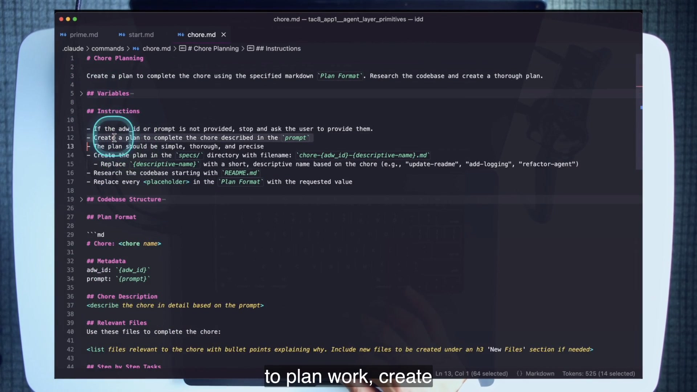
Later, app4 narrows the same pattern to a framework-specific problem class. plan_uv_mcp.md specifies a UV package workflow and points the planner at ai_docs/mcp-python-sdk.md. One concise request can then become a detailed MCP implementation plan because the reusable template already carries the technology-specific workflow and documentation context.
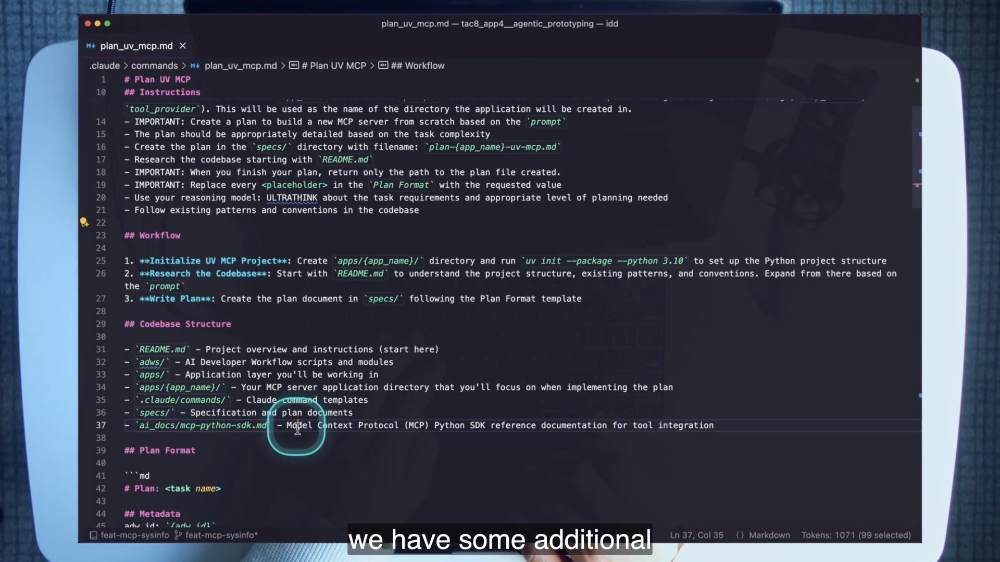
plan_uv_mcp.md specializes planning with UV initialization steps and a conditional MCP SDK document.4 · Name it
Template meta prompt and higher-order prompt
The distinction matters because it reveals where standards live. The planner template owns research and plan shape. The plan owns task-specific decisions. The higher-order implementer owns faithful execution and reporting. Improving one layer can upgrade many downstream tasks without rewriting every request.
5 · Worked example — test the problem class
From generic chore to UV MCP specialization
app1’s /chore works across ordinary maintenance requests. It requires research beginning with the README, replacement of every Plan Format placeholder, a structured file under specs/, and a report that returns the plan path. app4’s /plan_uv_mcp narrows the class. It carries the MCP-oriented workflow, an explicit SDK documentation reference, ordered implementation steps, and validation commands.
The specialization test is transfer. Can the template accept a new system-information MCP request it did not enumerate in advance and still produce the right plan shape? If yes, it captured the class. If it only works when the request repeats the original filenames and endpoints, it captured an instance.
/plan_uv_mcp test0001 \
"Create a concise and minimal MCP server that provides system information: memory, cpu, disk"
# expected artifact shape
specs/plan-*-uv-mcp.md
metadata
description
relevant files
ordered tasks
validation commands6 · You try — inspect, predict, compare
Read the contract before generating the plan
- Read
.claude/commands/plan_uv_mcp.mdend to end. - Predict the generated plan’s filename pattern and required headings.
- Run the in-loop command from the lab.
- Compare the generated file with your prediction.
- Mark every step whose quality came from the reusable template rather than the one-line request.
Pass when you can identify at least the metadata, relevant-files, ordered-task, and validation contributions of the template.
7 · Common fail + fix
Failure: specificity at the wrong layer
Too generic: “make a good plan” leaves standards implicit. Too specific: the template hard-codes one ticket’s files and solution. Contract-blind: the template writes a good plan but reports it in prose that the workflow cannot parse.
Fix: specialize around a durable problem class and its invariants—research sources, plan sections, validation expectations, and report shape—while leaving task-specific choices to the generated plan.
8 · Current practice
A Skill can package the template; it cannot choose your standards
9 · Retrieval
What makes a template meta prompt different from a good task prompt?
Reveal answer
It generates a second prompt artifact—a structured plan—according to reusable rules, context sources, and a fixed format for a problem class.
Which two Plan Format sections make the plan self-verifying?
Reveal answer
The ordered step-by-step tasks and the validation commands that check the finished work.
Why is /implement higher-order?
Reveal answer
It takes another prompt artifact—the generated plan—as its argument and executes it.
10 · Teach-back
Use one whiteboard example to distinguish task prompt, template meta prompt, generated plan, and higher-order implementer. Then explain how you know whether the template captured a class or an instance.
Pass if your class test uses an unanticipated request and your plan ends in executable validation.
The glue is where the guarantees live
adw_chore_implement.py composes two focused purposes: a planner writes and reports a plan path; deterministic code extracts that path; a builder receives it. The explicit report contract is the seam.
1 · Hook — concrete failure
Two excellent agents that cannot hand work to each other
A planner produces a thoughtful implementation plan and ends with “I’ve prepared everything you need.” A builder is ready to execute but receives no stable artifact path. A human reads the planner’s prose, finds the file, and pastes it into the next request. The agents are capable; the system is not composed. The human remains the API between them.
The fix is not a smarter parser that guesses at arbitrary prose. The fix is an explicit output contract owned by the planning prompt and enforced by the deterministic workflow.
2 · Picture — the plan-path contract
Non-deterministic work, deterministic handoff
/chore <adw_id> <prompt> researches and writes a plan.
agent: plannerThe prompt must return the path to the created specs/chore-*.md file.
chore.md § Reportextract_plan_path() regex-extracts the artifact or fails loudly.
ValueError → exit/implement <plan_path> executes the exact artifact.
agent: builder3 · Story — the shell-file demonstration
A deliberately simple task exposes a complete workflow
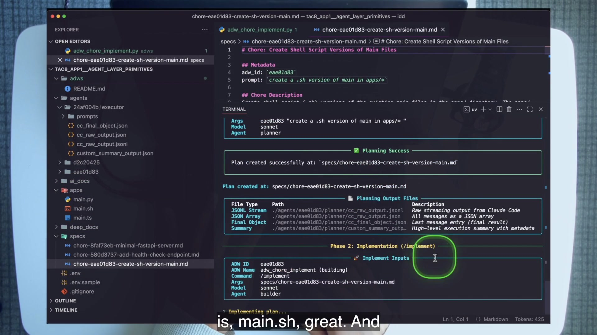
apps/main.sh now exists.The live request is intentionally overpowered for the work: create a shell version of the main program in apps/*. That choice removes application complexity from the lesson. The point is the control path. One ADW ID connects both phases. The planner and builder receive different names and different purposes. Planning failure aborts implementation. A parse failure exits rather than inventing a path. Per-phase summaries and a workflow summary preserve what happened.
4 · Name it
Composed ADW and explicit report contract
At larger scale, app2 describes the plan-then-build pairing as an architect and an editor. The idea is the same: separate purposes, connect them through a narrow artifact, and preserve the option to improve or replace each purpose independently.
5 · Worked example — trace failure boundaries
Four places the workflow can stop correctly
- Planner execution fails: the script reports Planning Failed and exits before Phase 2.
- Planner succeeds but violates Report:
extract_plan_path()raises because no matchingspecs/chore-*.mdpath is present. - Builder execution fails: the plan exists, but the implementation phase reports failure and the overall workflow does not claim success.
- Implementation runs but validation fails: the plan’s validation commands expose task-quality failure even if transport succeeded.
This is why explicit code can be better than clever chain syntax for teaching and operations. The branches show what the system believes, which artifact it trusts, and where it refuses to continue.
./adws/adw_chore_implement.py \
"create a .sh version of main in apps/*"
# verify
specs/chore-<id>-*.md
apps/main.sh
agents/<id>/planner/
agents/<id>/builder/
agents/<id>/workflow_summary.json6 · You try — break the contract on paper
Predict the exact failure before touching a file
Imagine changing chore.md so its Report section says only “Summarize the plan.” Predict what adw_chore_implement.py will do after the planner succeeds. Then find the regex patterns in extract_plan_path() and identify one compliant report string. Do not make the breaking change in the course repo for the core lab.
Pass if you predict a parse error before builder invocation and can point to the prompt line that owns the repair.
7 · Common fail + fix
Failure: invisible coupling
Symptom: someone “improves” the planning prompt’s tone, changes its report format, and silently breaks the parser. Or the parser becomes permissive enough to accept any Markdown path and hands the wrong artifact to the builder.
Fix: treat prompt reports as versioned interfaces. Keep the contract narrow, validate filename class and existence, fail before the next phase, and test the handoff when editing either side.
8 · Current practice
Structured outputs strengthen the seam; they do not eliminate it
9 · Retrieval
Trace the plan path in one sentence.
Reveal answer
/chore writes and reports a specs/chore-*.md path, deterministic code regex-extracts it, and /implement receives that path as its argument.
Why would editing only the Report section break the workflow?
Reveal answer
The parser depends on a machine-readable plan path in the report. Removing or reshaping it violates the interface between planner and orchestrator.
Why use separate planner and builder agent names?
Reveal answer
They represent separate purposes and preserve distinct output trees, making each phase easier to inspect, reproduce, and improve.
10 · Teach-back
Explain the workflow to someone who thinks two agents are automatically a multi-agent system. Show why the narrow report contract and deterministic handoff—not agent count—create composition.
Pass if you include the abort paths and distinguish transport success from validation success.
A Markdown file can be a multi-agent control plane
Todone turns tasks.md into a two-way task list: people declare work, a five-second trigger finds eligible tasks, agents claim and execute them in isolated worktrees, and the same file receives IDs, commit hashes, and failure reasons.
1 · Hook — concrete failure
The task list that only tells humans what to do
A traditional checklist is one-way. You write a task; a human reads it, chooses a branch, runs the work, remembers to update the status, and communicates the result. Adding agents without changing that state model merely gives the human more workers to dispatch. The operator still chooses each task, constructs each environment, and reconciles each result.
Todone removes that hidden dispatch loop with intentionally plain machinery. The file carries enough status for a trigger to decide eligibility. Tags route model and workflow. Worktree headings name dedicated environments. Agents update the same task line they claimed. The Markdown is not a toy database accidentally doing orchestration; it is a transparent state machine chosen so the whole control plane remains visible.
2 · Picture — the state vocabulary
Five marks define pickup, progress, outcome, and dependency
Eligible for pickup when its worktree and concurrency rules permit.
Claimed by a specific ADW; the ID makes the run traceable.
Finished with a real commit hash and associated workflow identity.
Terminal failure with an inline // Failed: reason explanation.
Eligible only after every task above it in the same worktree is ✅.
The dependency rule is stricter than “wait until the previous task finishes.” Every earlier task in the worktree must be successful. A failed task above a clock blocks it indefinitely. That is a visible safety property, not a scheduler bug.
3 · Story — ignition, motion, proof
Seven agents start without seven human dispatches
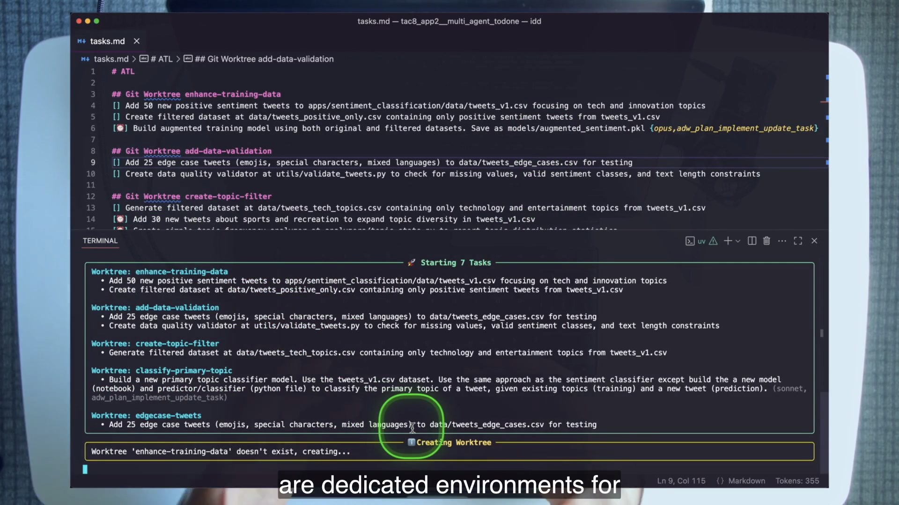
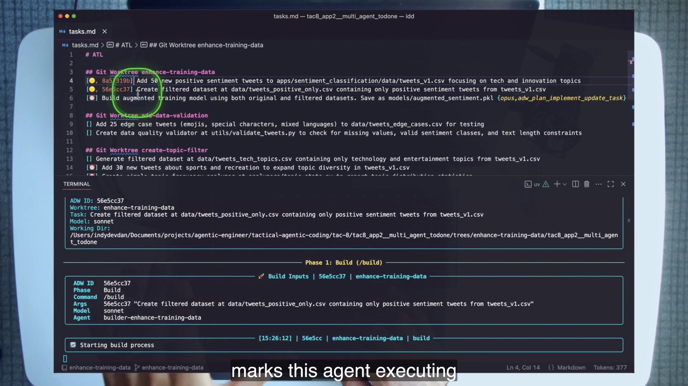
🟡 lines carry ADW IDs while one agent’s Build Inputs identify its worktree, model, prompt, and purpose.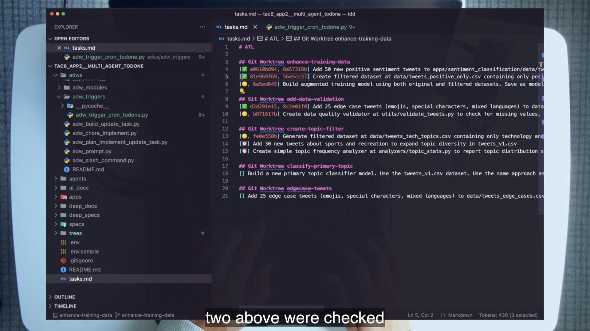
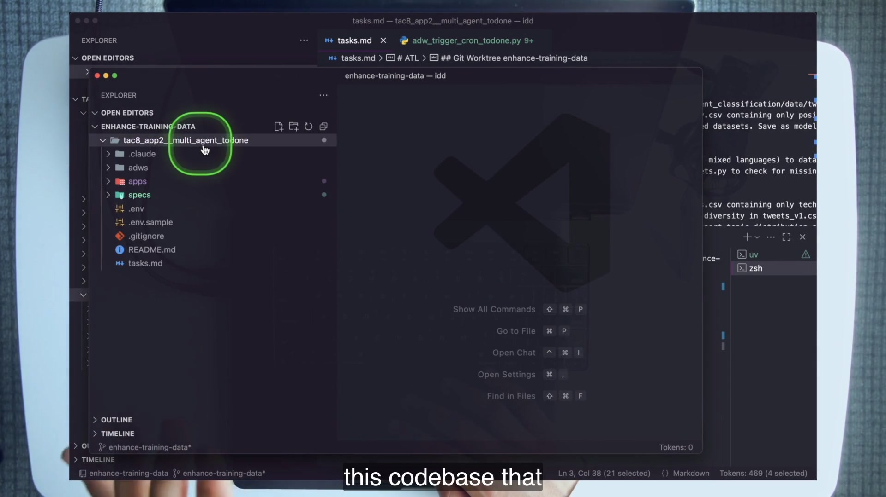
tac8_app2__multi_agent_todone through cone sparse checkout.4 · Name it
Todone, two-way task list, and double isolation
The trigger is how the human stays out of the loop. It checks the file on a schedule, performs a cheap pending-marker precheck, then delegates parsing to /process_tasks, which must return eligible worktree groups as strict JSON. The trigger creates missing environments and launches task-specific ADWs up to the concurrency cap.
5 · Worked example — route with tags
Configuration travels with each task
{opus} selects the course’s higher model tier for that task; {sonnet} chooses the default-era alternative.
[] Investigate difficult data drift {opus}{adw_plan_implement_update_task} chooses the plan→implement→update workflow instead of the quicker build→update path.
[] Redesign training pipeline {adw_plan_implement_update_task}# ATL
## Git Worktree enhance-training-data
[] Create a positive-only dataset {sonnet}
[] Add a dataset validation command {opus, adw_plan_implement_update_task}
[⏰] Document the completed dataset flow
## Git Worktree improve-model
[] Add an evaluation report
[] Compare baseline metrics {opus}
[] Update the application READMEThe example matches the repository’s syntax and lab shape while leaving the task content for the learner to author. The essential point is that worktree, dependency, model, and workflow decisions are all declarative inputs to the trigger.
6 · You try — dry-run the board
Predict eligible work before paying for it
- Create two worktree groups with three tasks each.
- Mark the last task in one group
[⏰]. - Add one model tag and one plan-implement workflow tag.
- Run
./adws/adw_triggers/adw_trigger_cron_todone.py --once --dry-run. - Before reading the output, write which tasks should be eligible and which workflow each should route to.
The repository supports --once, --dry-run, --interval, and --max-tasks. Use those controls to cap cost and make behavior inspectable.
7 · Common fail + fix
Failure: mistaking blocked for broken
Symptom: a ⏰ task does nothing, so the learner restarts the trigger, edits the state manually, or blames concurrency. A failed task above it is still present.
Fix: read the worktree group top to bottom. The clock is eligible only when every earlier line is ✅. If an earlier task is ❌, the block is correct. Repair or intentionally redesign the preceding work; do not force the dependent task through.
A second failure is one giant task with no tags or dependencies. That uses the file as a queue but fails to practice orchestration. Split by purpose and use configuration where task risk actually differs.
8 · Current practice
Native parallel agents reduce scaffolding; the state model still matters
9 · Retrieval
Recite the full tasks.md state machine.
Reveal answer
[] pending → [🟡, adw_id] in progress → either [✅ commit_hash, adw_id] or [❌, adw_id] // Failed: reason; [⏰] starts only when every task above it in the same worktree is ✅.
What do the two important tags control?
Reveal answer
{opus} changes the model tier; {adw_plan_implement_update_task} changes the workflow from direct build/update to plan/implement/update.
What is double isolation?
Reveal answer
A dedicated Git worktree for the task group plus sparse checkout containing only the app2 directory.
10 · Teach-back
Trace one tagged task from pending line to committed result. Name the parser, trigger, worktree, ADW selection, state updates, and the manual validation Dan performs before trusting the checkmark.
Pass if you explain why a commit hash is stronger than a decorative ✅ and why Dan still inspects an artifact.
An out-loop factory needs input, trigger, environment, and review
app4 replaces the Markdown board with Notion, routes prototype classes to specialized planners, claims tasks before launching detached workers, and returns results to a human-in-the-loop review surface. It is PITER made concrete.
1 · Hook — concrete failure
The factory that builds the same card twice
A poller queries a board every fifteen seconds. It sees one eligible prototype request and starts an agent. Before that agent finishes, the next poll sees the same unchanged card and starts another. Two worktrees, two costs, and two conflicting results appear. The trigger exists, but the task has no atomic-looking claim transition.
Out-loop systems magnify state mistakes. Once humans stop dispatching every run, eligibility, claim, environment, and review must be explicit. app4’s first important action is not planning. It is changing the card to In progress and attaching the new ADW ID so later polls know the task is owned.
2 · Picture — PITER mapped to app4
Four responsibilities around one factory
A Notion card with description, trigger text, and optional {{prototype: type}} tag.
A fifteen-second cron poll, or --once for a controlled teaching run.
An isolated worktree under trees/, named by a one-purpose agent.
Board columns, live status updates, commit result, HIL Review, and continue - ... iteration.
3 · Story — the board becomes the prompt surface
The coding tool is no longer where work begins
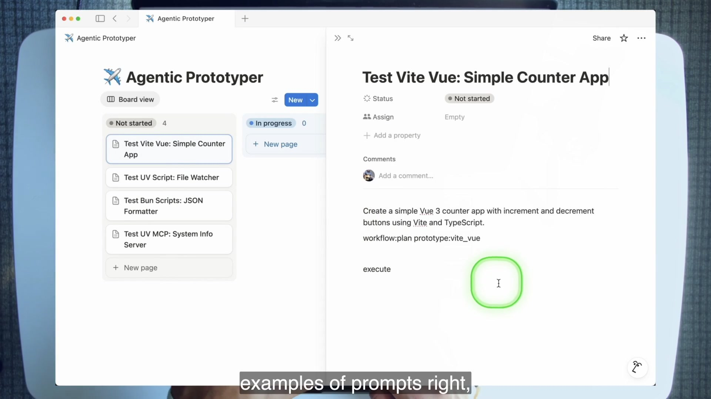
workflow:plan, prototype:vite_vue, and the execution trigger.The trigger queries cards in Not started or HIL Review. execute requests a new run; continue - <prompt> carries iteration feedback. Prototype tags route to one of four specialized planning commands: UV script, Vite/Vue, Bun scripts, or UV MCP. A one-purpose naming agent returns only a worktree name. The trigger creates the environment, starts the plan→implement→Notion-update ADW as a detached process, and returns to polling.
The lesson’s MCP payoff occurs after the screen freezes, so the source frame cannot show it. The audio-verified sequence reports a generated system-information MCP server, its .mcp.json wiring, and live calls for memory, CPU, and disk information. The teaching claim is not the screenshot. It is that a specialized meta prompt and factory closed a reusable UV MCP problem class from one concise request.
4 · Name it
Trigger, claim, route, spawn, review
PITER is not an acronym you place beside an architecture after the fact. It is a diagnostic. If a system cannot say where prompt input lives, what wakes the workflow, where the agent works safely, and how outcomes are reviewed or continued, it is not ready to move out of the loop.
5 · Worked example — route one MCP card
One tag chooses a specialized planner
Request system information for memory, CPU, and disk.
{{prototype: uv_mcp}} + executeGenerate an ADW ID and write In progress before launching work.
status + adw_idThe prototype flag selects /plan_uv_mcp, then /implement.
--prototype uv_mcpUpdate the Notion task with outcome and commit; move to review or terminal state.
/update_notion_taskThe detached process is important. subprocess.Popen(..., start_new_session=True) allows multiple prototype workers to continue independently of the monitor’s immediate loop. The board and stored ADW ID, not a parent terminal conversation, become the continuity surface.
6 · You try — read the factory without Notion
Trace claim → route → spawn in source
- Open
adws/adw_triggers/adw_trigger_cron_notion_tasks.py. - Find the eligibility states and execution triggers.
- Find the immediate update to In progress with
adw_id. - Find
delegate_task()and the prototype flag. - Use app4’s README to map
uv_mcpto/plan_uv_mcpandcontinue -to HIL iteration.
The core lab needs no Notion account. It evaluates whether you can trace and explain the real course implementation.
7 · Common fail + fix
Failure: treating review as administrative drag
Symptom: the system marks every completed process Done, or the team removes HIL Review because the agent already committed code. Iteration feedback returns through private chat, outside the factory’s state.
Fix: keep HIL Review and continue - <prompt> as the steering loop until encoded validations and reliability justify dropping review. Review is not merely a column; it is how a human can improve an out-loop result without becoming the dispatcher again.
8 · Current practice
Managed triggers can replace the poller; the claim invariant stays
9 · Retrieval
Map PITER onto app4.
Reveal answer
Prompt input is the Notion card; Trigger is the fifteen-second poller; Environment is the isolated trees/ worktree; Review is the board state, live updates, HIL Review, and continuation prompt.
What prevents two polls from grabbing the same card?
Reveal answer
The trigger immediately changes the card to In progress and stores the ADW ID before delegating the task.
How does {{prototype: uv_mcp}} affect execution?
Reveal answer
It routes the task into the full plan→implement→update workflow and selects the specialized /plan_uv_mcp planning command.
10 · Teach-back
Teach app4 as a factory, not a demo. Start at one Notion card, explain the duplicate-pickup hazard, then trace the card through claim, worktree, specialized planner, detached worker, and HIL continuation.
Pass if every PITER letter maps to a real course artifact or state transition.
Break the focus rule once—and engineer the exception
The course’s reliability rule is one agent, one prompt, one purpose. app5 deliberately breaks “one prompt” for conversational product agents, then supplies the missing mechanism: a persisted Claude session ID resumed across prompts, refreshes, and server restarts.
1 · Hook — concrete failure
Two symmetrical mistakes around continuity
One team sends planning, implementation, debugging, review, and documentation through the same endless agent session. The context window becomes a history of conflicting purposes and stale assumptions. Another team interprets focus as an absolute ban on continuity, so its in-product assistant forgets the conversation after every prompt and cannot survive a refresh. Both teams repeat a rule without understanding the purpose it protects.
Focus makes agent behavior easier to reproduce, test, validate, and improve. Conversation is a use case whose purpose itself spans multiple turns. app5 therefore keeps one conversational purpose while resuming the same session deliberately.
2 · Picture — the AEA path
Outside the loop moves inside the product
NLQ application
Cmd/Ctrl+P opens a developer console.
Nexus
Codebase Q&A in one agent window.
Roon
A small UI change in parallel.
→
AEA server · :8743
/aea/new_agent
/aea/prompt_agent
adw_aea_patch.py
First prompt creates a session; later prompts use --resume.
↔
SQLite continuity
agent_id
agent_name
cc_session_id
conversation + state
This is a designed architecture diagram, not a screenshot. The AEA demo occurs in the audio-only region after the capture freezes. Every label comes from app5’s tracked server, patch script, and client console.
3 · Story — Nexus and Roon
Two agents live beside the product they operate
The demo starts the Natural Language SQL application and a separate AEA server on port 8743. In the product, Cmd+P opens a developer console with commands including /aea, /list, /toggle-view, and /close-all. One new window—Nexus—answers what the codebase is about. A second—Roon—receives a small button-renaming task. They operate concurrently inside the application surface.
On first prompt, the server creates an agent record with no Claude session ID. The patch subprocess calls Claude; the returned session ID is stored. On a later prompt, adw_aea_patch.py retrieves that record and adds --resume <cc_session_id>. On page refresh, the client fetches active agent IDs and reconnects the windows. The exception is therefore observable state, not a hand-waved “agent memory” capability.
4 · Name it
AEA — Agent Embedded Application
The reframe is memorable: outside the loop is inside the application. The human no longer opens a coding chat to dispatch the agent. The product itself hosts the agent interface and reconnects it to durable server-side state.
5 · Worked example — trace a refresh
Continuity crosses three identities
- The client creates or reconnects a durable
agent_id. - The AEA server loads the SQLite row for that agent, including
cc_session_idwhen one exists. - The server launches
adw_aea_patch.py <agent_id> <prompt>as a background subprocess. - The patch script resumes the Claude session when the stored ID is present and writes the updated response and session data back.
- Client polling fetches the refreshed agent state; after a browser reload,
/aea/get_agent_idslets the UI restore active windows.
The browser window ID, application agent ID, and Claude session ID are not interchangeable. The course persists the application identity and maps it to the model-session identity so product continuity can survive UI churn.
6 · You try — source trace before launch
Prove resume exists in code
- Find the
aea_agentsSQLite schema inadw_trigger_aea_server.py. - Find the first-prompt and existing-session branches.
- Find where the client restores agent IDs after refresh.
- Find
--resumeconstruction inadw_aea_patch.py. - Explain what would be lost if only browser-local state were kept.
Pass before running the servers. The lab operation should confirm a mechanism you already understand.
7 · Common fail + fix
Failure: importing conversation into every workflow
Symptom: because AEA resume works, planning and building workflows start preserving long sessions too. Context accumulates across unrelated purposes, and reproducibility falls.
Fix: require a use-case argument for continuity. If the purpose is a single plan, build, task, review, or report, start fresh and pass only the needed artifact. Resume only where multi-turn continuity is itself part of the product behavior, and persist the identity explicitly.
8 · Current practice
The hand-built preview became a standard product-agent shape
9 · Retrieval
State the one-agent rule and why it exists.
Reveal answer
One agent, one prompt, one purpose creates focused contexts that are easier to reproduce, test, validate, and improve.
What is the single sanctioned exception in this lesson?
Reveal answer
app5’s conversational AEA, which needs continuity across prompts and implements it with a stored Claude session ID passed back through --resume.
What survives a page refresh?
Reveal answer
The SQLite-backed application agent records, including agent IDs, conversation/state, and their mapped Claude session IDs; the client refetches active IDs and reconnects.
10 · Teach-back
Defend both sides of the rule: explain why a planning agent should not resume forever, then explain why Nexus should. Draw the identity mapping that makes the exception engineered rather than accidental.
Pass if you name agent_id, cc_session_id, SQLite, and --resume.
Drop the R only after the system earns it
The course closes by compressing eight tactics, twelve leverage points, and four KPIs into one daily question. Zero-touch engineering is not a leap of faith; it is the point where encoded feedback and a reliability streak make human review the bottleneck.
1 · Hook — concrete failure
The team that removes review before replacing it
A workflow succeeds twice, so the team changes PITER to PITE by deleting the review step. The plan lacks strong validation commands. The trigger can repeat work, the builder can commit a plausible miss, and no evidence records the quality trend. Review disappeared; feedback did not take its place. The team did not reach zero touch. It reached unobserved risk.
The course’s sequence is the opposite. Encode feedback loops first. Track how many attempts a workflow needs, how large a task it can handle, how long its success streak lasts, and how much human presence it consumes. Only when the review adds less value than it costs does dropping the R become rational.
2 · Picture — KPIs and the disappearing R
Measure reliability before changing the operating mode
How many runs are needed for a successful outcome?
How large a problem can the workflow handle reliably?
How many correct outcomes occur consecutively?
How much human attention is required during operation?
PITER
→
PITE
Prerequisite: encoded validation + proven reliability streak. The R is replaced, never merely erased.
3 · Story — the course deletes its own complexity
Every tactic folds into one question
The recap walks backward through the system: stop hand-coding; use the Core Four; adopt the agent’s perspective across twelve leverage points; template engineering; stay out of the loop; add feedback loops; keep one agent focused; target zero-touch operation. TAC-8 then asks where the engineer is spending the current block.
Am I working on the agentic layer—or in the application layer?
52:39 · audio-verified final-question revealThere are three acceptable reasons to be in the application layer: a real deadline, testing something by hand, or running prompts in-loop to verify that they will work out-loop. The list prevents the question from becoming dogma while keeping the exemptions narrow enough to change behavior.
4 · Name it
The final question, PITER→PITE, and living software
The closing economic claim follows from the architecture: code and implementation are increasingly commoditized, so value moves toward system design, domain encoding, quality control, and creative problem decomposition. The engineer then encodes those higher-order judgments into the agentic layer too.
5 · Worked example — decide whether app2 earned PITE
A checkmark is not a reliability streak
Suppose Todone drains one six-task board. Every line reaches ✅ with a commit hash. That proves one run completed; it does not prove review is useless. Dan still opens the sparse worktree and checks the generated dataset for values that should not appear. That manual validation reveals what the next encoded check should be.
After the plan templates contain the right validation commands, the workflows reliably execute them, task states preserve failures honestly, and multiple boards show a strong streak with falling attempts and presence, review may become redundant for that narrow problem class. PITE is therefore earned per dialed-in workflow, not declared for the whole organization at once.
6 · You try — decision rehearsal
Keep, strengthen, or drop the R
For each case, choose one action and defend it: (a) a new planner produces plausible plans but no validation commands; (b) a data workflow has twenty consecutive passes with machine checks and no useful human corrections; (c) an AEA agent survives refresh but sometimes changes unrelated files; (d) a Notion prototype factory has a clean claim mechanism but vague HIL feedback.
Answers: strengthen review and validation for (a), consider narrow PITE for (b), keep review and tighten purpose/isolation for (c), and improve the review contract for (d).
7 · Common fail + fix
Failure: asking the final question only once
Symptom: the question appears in a course note but not at the start of work blocks. The engineer knows the answer in theory and still spends the month hand-performing the same class of task.
Fix: make the question a daily gate. When the answer is application layer, name the exemption. When no exemption applies, choose the smallest ring improvement that moves the repeated work toward a callable, observable, isolated, self-checking workflow.
8 · Current practice
Implementation surfaces change faster than the diagnostic
9 · Retrieval
What must be true before PITER becomes PITE?
Reveal answer
Feedback loops must be encoded and a reliability streak must show that human review is no longer adding useful value.
Name the four KPIs and directions.
Reveal answer
Attempts down, task size up, success streak up, and human presence toward zero.
What are the three acceptable application-layer reasons?
Reveal answer
A real deadline, testing something by hand, or running prompts in-loop to verify that they will work out-loop.
10 · Teach-back
Give the two-minute closing lesson without course jargon first. Then add PITER→PITE, the four KPIs, the three exemptions, and the final question. End by naming the next repeated problem class you would encode.
Pass if your explanation makes autonomy an evidence-based progression, not a personality trait of the model.
Current practice: preserve the primitives, upgrade the packaging
TAC-8 ages well because its core is an allocation decision and a system vocabulary. The extract identifies seven course-era packaging gaps. None overturns the two layers, MVAL, prompt contracts, worktree isolation, feedback loops, or final question.
Slash-command libraries, hand-built CLI wrappers, blanket permission bypass, local polling loops, detached OS processes, period model names, and a custom AEA server.
Skills, supported Agent SDKs, permission modes and hooks, sandboxing, managed schedules/webhooks, native parallel agents, and standard session APIs.
Explicit purpose, narrow contracts, durable artifacts, observability, isolation, feedback, claim semantics, and measured autonomy.
Teach .claude/commands/*.md because it exposes the prompt. Package mature, reusable expertise as Skills when discovery, trigger guidance, and team sharing help.
Study the CLI gateway to understand identity and receipts. Prefer the supported Agent SDK for production typed messages, sessions, hooks, subagents, and structured output.
Keep worktree isolation, but replace blanket bypass with scoped permission modes, allow/deny rules, sandboxed tools, and pre/post-use hooks.
Use CI, webhooks, schedules, background agents, or native fan-out where appropriate. Retain eligibility, claim, concurrency, dependency, and environment rules.
Model names, local executable paths, and MCP wiring versions may change. Update them without rewriting the architecture lesson.
Use current session and product-agent APIs, while preserving durable application identity and an explicit reason for continuity.
Two approved YouTube extensions
These are the only chapter overlays selected by the extract, keeping the current-practice layer under the three-video maximum.
Extends the lesson’s end state: a codebase whose encoded workflows operate more reliably than ad hoc manual practice.
Watch on YouTube →Slows down the folder-level reasoning behind the minimum viable agentic layer.
Watch on YouTube →Graded lab · Build and operate the ring
This lab uses only the tracked TAC-8 course codebase. You will operate four of its five sibling apps, explain the evidence each leaves, and type zero lines of application code by hand. Prompts, plans, task declarations, and ADW glue are the permitted work surface.
Lab 8.0 · Set up and classify
Time: 15 minutes · Purpose: prove you know which layer you are about to touch.
- Use the catalog copy at
tac/tac-8or clone the course repository into a fresh TAC workspace and enter it. - Verify the required toolbelt with
claude --version,uv --version,bun --version,git --version, andgit worktree list. Use WSL for the course scripts on Windows. - Enter
tac8_app1__agent_layer_primitives, copy.env.sampleto.env, and set the required key and optionalCLAUDE_CODE_PATH. - Read app1’s
README.mdfully. Draw a core-and-ring diagram and placeapps/,adws/,specs/, and.claude/commands/. - Write the final question at the top of your lab notes. Answer it at every checkpoint.
Pass evidence
- You can name both layers and all three MVAL directories without looking.
- Your diagram places
apps/in the center and the three MVAL pieces in the ring. - Your safety note identifies the permission-bypass flag and the disposable-repo boundary.
Lab 8.1 · Reproduce app1’s primitive path
Time: 30–40 minutes · Purpose: move from an in-loop prompt to an observable, composed out-loop workflow.
A · Establish the in-loop baseline
- Start Claude in app1 and run
/prime. Confirm it usesgit ls-files, reads the repository documentation, and reports. - Run
/start. Confirm both hello-world applications execute. - In your notes, explain why testing these prompts in-loop is a valid application-layer exemption: you are verifying prompts that will later run out-loop.
B · Call the gateway
./adws/adw_prompt.py \
"list all files in the adws directory and a concise output of their purpose"- Record the ADW ID, agent name, model, working directory, and output path from the Inputs panel.
- Inspect the four files under
agents/<adw_id>/oneoff/. - For each file, write its content role and likely consumer. Do not write “log” four times.
C · Call a slash command without a chat
./adws/adw_slash_command.py /startConfirm the same application behavior occurs with no interactive conversation. State what moved out of the loop.
D · Compose planner and builder
./adws/adw_chore_implement.py \
"create a .sh version of main in apps/*"
sh apps/main.shVerify the generated specs/chore-<id>-*.md, apps/main.sh, planner and builder receipt directories, and workflow_summary.json. Trace the plan path through the Report contract and regex before checking the generated application file.
Pass evidence
- Four output files correctly distinguished.
- Headless
/startsucceeds. - The exact chore produces a plan and a runnable
apps/main.sh. - You can explain why changing
chore.md’s Report section can break deterministic glue.
Lab 8.2 · Operate app2 Todone
Time: 30–45 minutes · Purpose: prove task state, dependency, routing, and environment isolation under real agent pickup.
- Enter
tac8_app2__multi_agent_todone, create its local.envfrom the sample, and readREADME.md,tasks.md, and the trigger’s help text. - Replace the task body with your own
# ATLboard: two worktree groups, three tasks per group, one final[⏰]task, one model-routing tag, and oneadw_plan_implement_update_tasktag. Keep all work against the existing sentiment-classification course app. - Run
./adws/adw_triggers/adw_trigger_cron_todone.py --once --dry-run. Compare eligible tasks and routes with your prediction. - Run once for real with a cost-appropriate
--max-tasks. Watch pending states become🟡with ADW IDs. - Run the normal trigger long enough to let the board drain, or repeat controlled
--onceruns. Do not manually promote the clock-marked task. - For every completed line, verify the commit inside its worktree using
git -C trees/<name> log --oneline. - Open one worktree and prove the sparse checkout contains only
tac8_app2__multi_agent_todone. - Validate one generated data artifact the way Dan does: define a value that must not appear, search for it, and record the zero-hit proof before trusting ✅.
Pass evidence
- State transitions carry real ADW IDs and real commit hashes or honest failure reasons.
- The clock dependency starts only after all earlier tasks in its group reach ✅.
- Model and workflow tags route as predicted.
- One sparse worktree and one application artifact receive independent verification.
Lab 8.3 · Read app4 as a PITER factory
Time: 15–25 minutes · Purpose: understand specialized routing and claim semantics without requiring a Notion account.
- Enter
tac8_app4__agentic_prototyping. Read the trigger’s claim→route→spawn path and.claude/commands/plan_uv_mcp.md. - Run Claude and execute:
/plan_uv_mcp test0001 "Create a concise and minimal MCP server that provides system information: memory, cpu, disk". - Open the generated
specs/plan-*-uv-mcp.md. Grade it against metadata, description, relevant files, ordered steps, and validation commands. - In the source and README, prove that
{{prototype: uv_mcp}}routes to/plan_uv_mcp, andcontinue - <prompt>is the HIL iteration trigger. - Locate the immediate In progress + ADW ID claim transition and explain the duplicate-pickup failure it prevents.
Pass evidence
- A real Plan-Format-conformant UV MCP plan exists inside the course app.
- PITER maps to the exact board, poller,
trees/, and review states. - The claim happens before detached delegation in your source trace.
Lab 8.4 · Verify app5’s AEA exception
Time: 15–25 minutes · Purpose: prove two concurrent in-product agents preserve focused conversational continuity.
- Enter
tac8_app5__nlq_to_sql_aea. Copyapp/server/.env.sampletoapp/server/.env, add the required keys, install the tracked client/server dependencies, and update the course’s machine-specificCLAUDE_CODE_PATHinscripts/aea_server_start.sh. - Run
./scripts/start.sh. In another terminal run./scripts/aea_server_start.sh. Confirm the application athttp://localhost:5173and AEA server on port 8743. - Press Cmd+P on macOS or Ctrl+P elsewhere, run
/aea, and ask, “what is this codebase about?” - Create a second AEA window and request one small UI change inside this same course application. Do not edit the application by hand.
- Refresh the page. Verify both agents reconnect with their histories. Record their
agent_idvalues and find storedcc_session_idvalues in the server’s persisted state.
Pass evidence
- Two concurrent AEA windows: one Q&A, one code change.
- Both reconnect after refresh.
- You can trace
agent_id→ SQLite row →cc_session_id→--resume. - The code change came through the AEA workflow, not your editor.
Lab 8.5 · Stretch the course layer safely
Choose one. All work remains inside the TAC-8 course codebase.
- New problem class in app1: create a
/bugfixor/docstemplate meta prompt, wire it to the shared implementer, and prove team standards appear in a generated plan. - Blocked-chain proof in app2: design task one to fail validation and task two as
[⏰]; prove the second never starts and the first records an honest reason. - Trigger surgery in app2: change polling and concurrency through supported flags, then add one new workflow tag and ADW route in the course app.
- Real app4 board: configure the course app’s Notion MCP and database ID, run one
{{prototype: uv_script}}card with--once, and return it to the board’s review flow. - AEA restart: keep the AEA pointed at app5, restart the server, and prove the persisted course-agent conversation reconnects.
Submission checklist
- Zero application code typed by hand.
- Four gateway output files produced and correctly explained.
- Composed app1 workflow produced a plan, runnable shell application, and two-phase summary.
- app2 board shows verifiable commits or honest failures, dependency behavior, tag routing, and sparse isolation.
- app4 produced a valid specialized plan and a correct PITER/claim trace.
- app5 ran two resumable agents inside the application.
- Oral check completed without notes: layers, ≥50% rule, MVAL, gateway receipts, report contract, task states and tags, PITER→PITE prerequisite, focused-agent exception, final question, and three exemptions.
Grading rubric · 24 points
Dimension
0 · Missing
1 · Partial
2 · Mastered
Layer discipline
Hand-edited application code
Mostly stayed in ring; weak classification
Zero hand code; every checkpoint classified and defended
Gateway observability
No receipts
Files exist but roles blur
All four files explained with identity and consumer
Prompt contract
Cannot trace artifact
Finds plan but misses coupling
Traces report→regex→implement and predicts failure
Todone state
Board not run
Runs without dependency/routing proof
States, tags, commits, block, and isolation all proved
PITER factory
No mapping
Names letters generically
Maps real source artifacts and duplicate-claim prevention
AEA continuity
No working agents
One agent or no resume proof
Two agents, refresh/restart continuity, full identity trace
Feedback judgment
Drops review by assertion
Mentions validation
Uses KPIs, encoded checks, and streak before PITE
Teach-back
Recites terms only
Explains parts independently
Connects allocation→MVAL→composition→orchestration→PITE
Safety
Copies bypass practice broadly
Notes risk after running
Reads prompts first, scopes repo, and distinguishes production controls
Evidence quality
Claims completion
Provides screenshots or hashes alone
Combines receipts, hashes, source trace, validations, and explanation
Problem-class thinking
One-off request only
Names a class vaguely
Builds or critiques a reusable class with a transfer test
Final question
Cannot state it
States it without exemptions
Uses it daily and names all three legitimate exemptions
Mastery threshold: 20/24, with no zero in safety, layer discipline, or feedback judgment.
Cumulative mastery · retrieve the whole ring
Do this section after the lab and without reopening the chapter. Recognition is not the target. You should be able to reconstruct the architecture, diagnose its failures, and decide where engineering time belongs.
Round 1 · Twelve retrieval prompts
1. Define the two layers by responsibility and give Dan’s two-ingredient definition of the ring.
Reveal answer
The application layer is classical product software; the agentic layer is deterministic ADW code combined with non-deterministic prompts/models to operate it.
2. What is the MVAL, and what is the single scripting-language rule?
Reveal answer
adws/, .claude/commands/, and specs/; use any language that composes code, references files, and remains isolated from the application layer.
3. Name the four app1 gateway receipts in order.
Reveal answer
cc_raw_output.jsonl, cc_raw_output.json, cc_final_object.json, and custom_summary_output.json.
4. Why is a Plan Format more than Markdown formatting?
Reveal answer
It compiles engineering standards into a reusable generated artifact, including research, ordered tasks, and validation that a higher-order prompt can execute.
5. What exact contract couples /chore to adw_chore_implement.py?
Reveal answer
The Report section must return the created specs/chore-*.md path so deterministic code can extract and pass it to /implement.
6. Recite Todone’s states, dependency rule, and two routing dimensions.
Reveal answer
Pending → in progress → complete or failed; a clock waits for every earlier task in its worktree to be ✅; tags route model and workflow.
7. Why is a worktree plus sparse checkout called double isolation?
Reveal answer
The task gets a separate Git working tree and that tree exposes only the target app directory.
8. Map PITER onto app4 and name the claim invariant.
Reveal answer
Notion card, poller, trees/, board review; set In progress plus ADW ID before spawning.
9. State the focus rule, exception, and resume mechanism.
Reveal answer
One agent, one prompt, one purpose; AEA conversation is the exception; SQLite maps agent_id to cc_session_id, passed through --resume.
10. What makes it safe to remove the R?
Reveal answer
Encoded feedback and a proven reliability streak showing human review has become the bottleneck.
11. Name the four agentic KPIs and directions.
Reveal answer
Attempts down, task size up, success streak up, human presence toward zero.
12. State the final question and all three application-layer exemptions.
Reveal answer
Am I working on the agentic layer or in the application layer? Legitimate app-layer reasons: deadline, manual testing, or in-loop verification of prompts intended for out-loop use.
Round 2 · Diagnose four broken systems
A planner produces a file but the builder never runs. Diagnose the Report contract, returned filename, regex, file existence, and phase-one success before changing the model.
Two agents start the same Notion card. Inspect whether the In progress + ADW ID claim happened before detached delegation and whether eligibility excludes claimed states.
A [⏰] task never starts. Read all earlier tasks in that worktree; any non-✅ state, especially ❌, correctly blocks it.
An agent loses history after refresh. Trace active application IDs, SQLite persistence, stored Claude session ID, and the --resume branch.
A team deletes review after two passes. Ask for encoded validations, attempt trend, task-size evidence, success streak, and useful-review rate.
The team understands every mechanism but spends no time on it. Audit work blocks, name exemptions, and template the most repeated manual problem class.
Round 3 · Ninety-second teach-back
Without notes, teach this progression:
- Separate application and agentic responsibilities.
- Start the ring with prompts, plans, and ADWs.
- Make one agent call observable.
- Generate structured plans and hand them across explicit contracts.
- Add triggers, task state, routing, and isolated environments.
- Keep agents focused; resume only when conversation is the purpose.
- Encode feedback, measure reliability, and drop review only when earned.
- Ask the final question every day and allocate at least half your time to the ring.
Mastery sounds causal: each capability solves a failure exposed by the previous layer. A list of folder names is not enough.
Glossary · the course’s operating language
Agentic layer
Deterministic ADW code plus non-deterministic agentic prompts and models, wrapped around the application to operate it.
Application layer
The classical system: product code, data, database, infrastructure, and DevOps.
MVAL
Minimum Viable Agentic Layer: adws/, .claude/commands/, and specs/.
ADW
AI Developer Workflow: executable composition of deterministic code and agentic work.
Template meta prompt
A reusable prompt that generates another prompt artifact—usually a plan—in a strict format.
Higher-order prompt
A prompt that consumes another prompt or plan as its argument; /implement is the course example.
Plan Format
The required shape of a generated plan, including metadata, relevant files, ordered tasks, and validation commands.
Report contract
A machine-readable output promise joining a non-deterministic agent phase to deterministic orchestration.
Gateway script
The smallest ADW: one agent call plus run identity, environment, retries, and observable outputs.
Todone
app2’s to-do→to-DONE multi-agent task system driven by a two-way Markdown task list.
Trigger
The mechanism that fires an ADW without a person dispatching it: poller, schedule, webhook, CI event, or product server.
Double isolation
A dedicated Git worktree plus sparse checkout containing only the target application directory.
PITER / PITE
Prompt input, Trigger, Environment, Review; drop Review only after feedback loops and reliability evidence make it redundant.
AEA
Agent Embedded Application: an agent interface living inside the product, with durable session continuity where required.
Problem class
A recurring family of work captured by a reusable template or workflow, rather than one task instance.
Agentic KPIs
Attempts ↓, task size ↑, success streak ↑, and human presence → 0.
Prioritize Agentics
Tactic #8: allocate at least half of engineering time to improving the agentic layer as a starting point.
Final question
“Am I working on the agentic layer or in the application layer?”—the daily compression of the course.
Build the system that builds the system.
Then improve the ring until your best engineering practice is executable.